Niché dans les paysages luxuriants de Lombok, en Indonésie, Green Poya réinvente le luxe et la détente. J'ai façonné l'identité de ce resort, restaurant et spa unique, en mariant la sérénité du lieu à une expérience élégante et fonctionnelle.
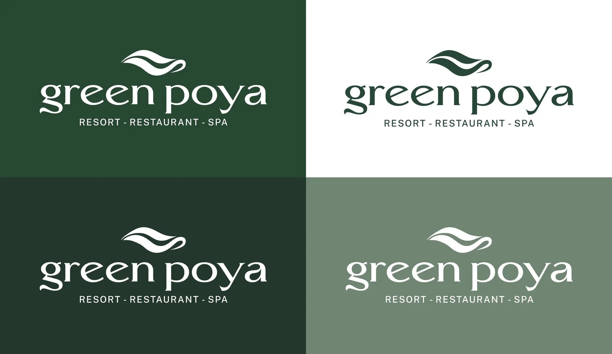
La papeterie marie éléments rustiques et luxe moderne, reflétant le cadre serein de Lombok. Dominée par des nuances de vert, elle fait écho à l'environnement et à la vision éco-responsable du resort. Une approche minimaliste, faite de lignes nettes et d'une typographie contemporaine, contraste avec la texture naturelle du papier, pour une expérience à la fois unique et luxueuse.
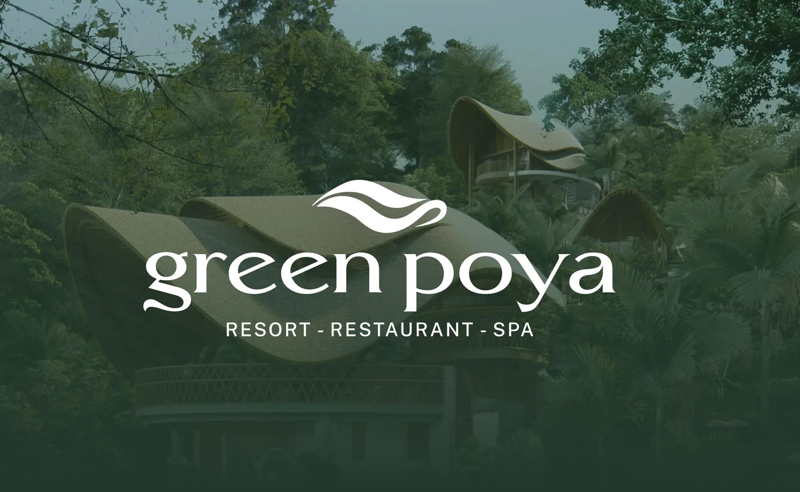
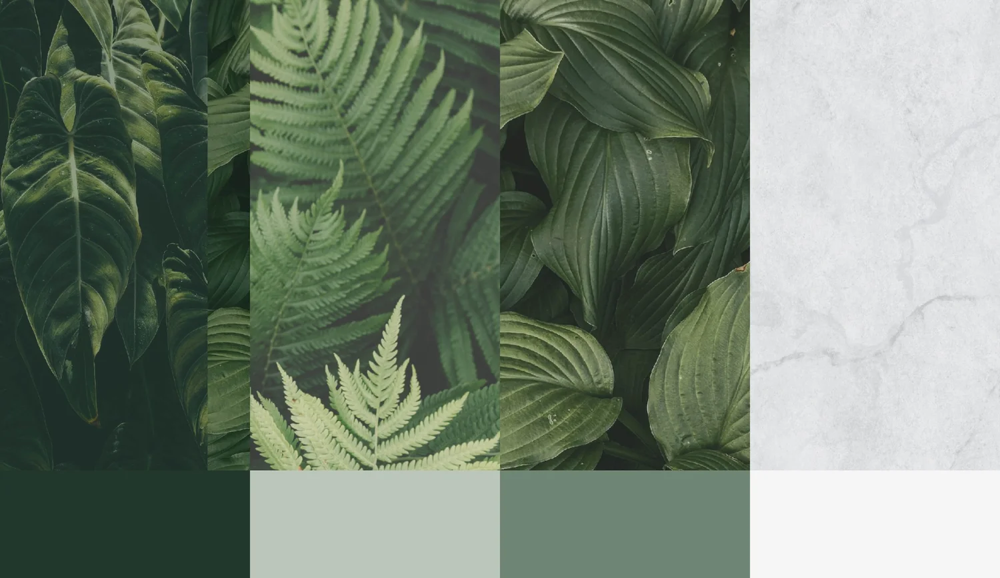
L'identité s'étend aux produits de beauté, savons et huiles. Le packaging conserve le vert signature et le style épuré, en misant sur des matériaux durables. La marque gagne en reconnaissance, et les gestes du quotidien deviennent de vrais moments de luxe.
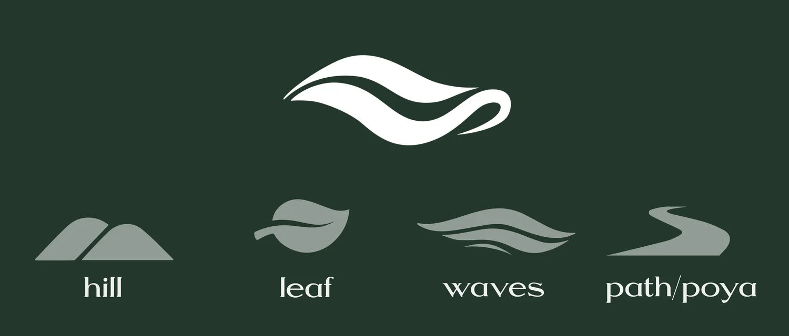
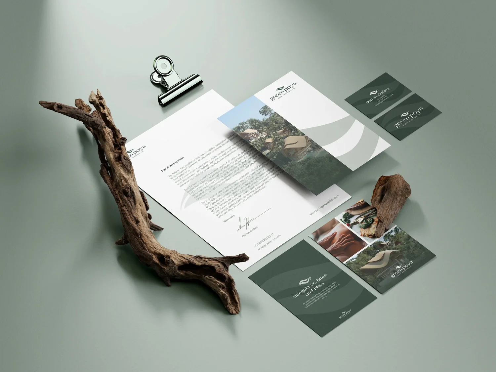
Pour le logo, j'ai honoré l'héritage suisse de Green Poya en m'inspirant de la « Poya », cet art populaire qui représente la montée annuelle des troupeaux vers les alpages. Un chemin stylisé dans l'icône symbolise ce voyage, et celui des voyageurs venus se ressourcer. Un pont entre les racines suisses et le havre indonésien.
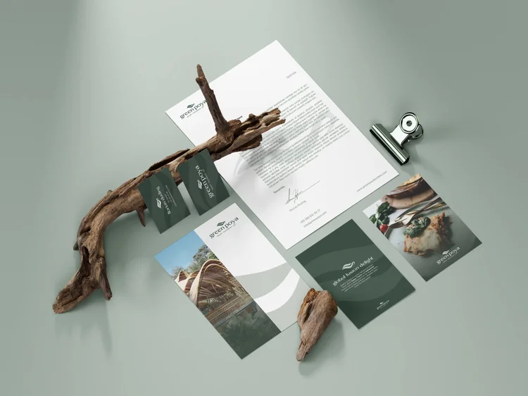
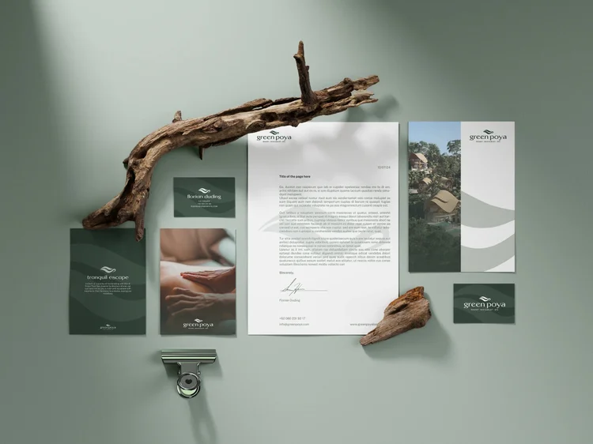
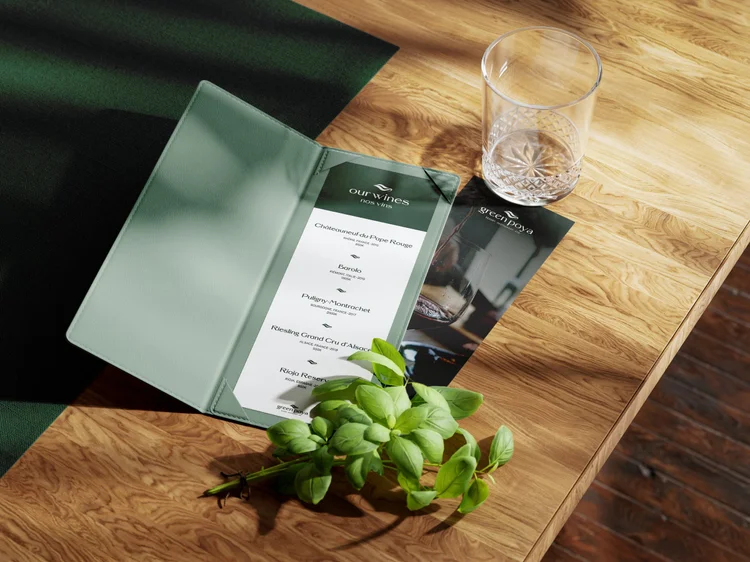
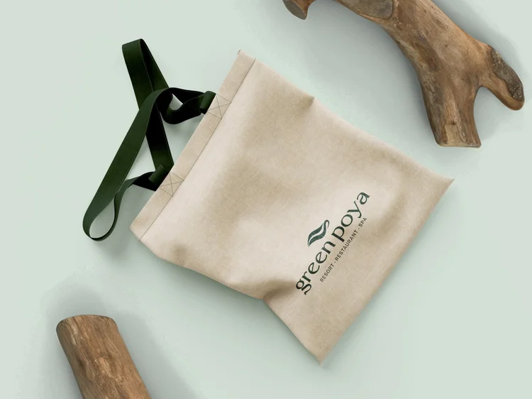
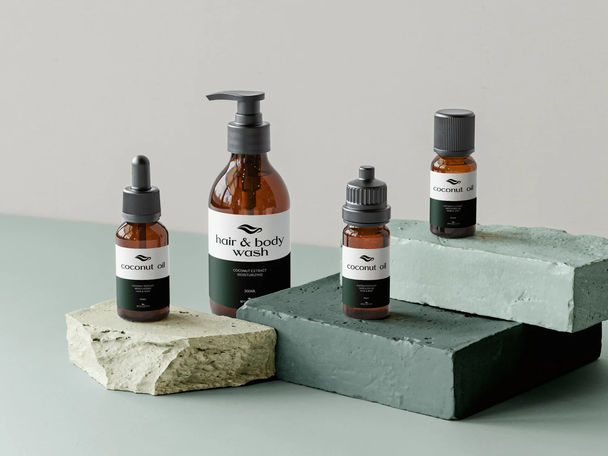
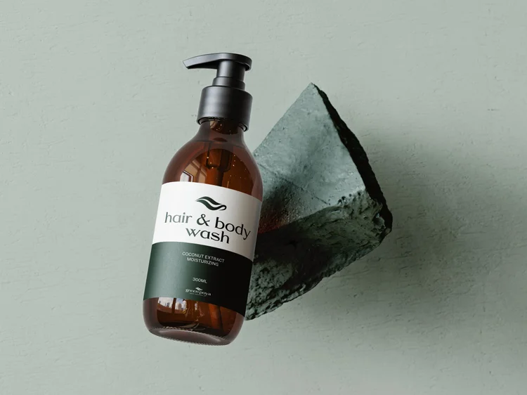
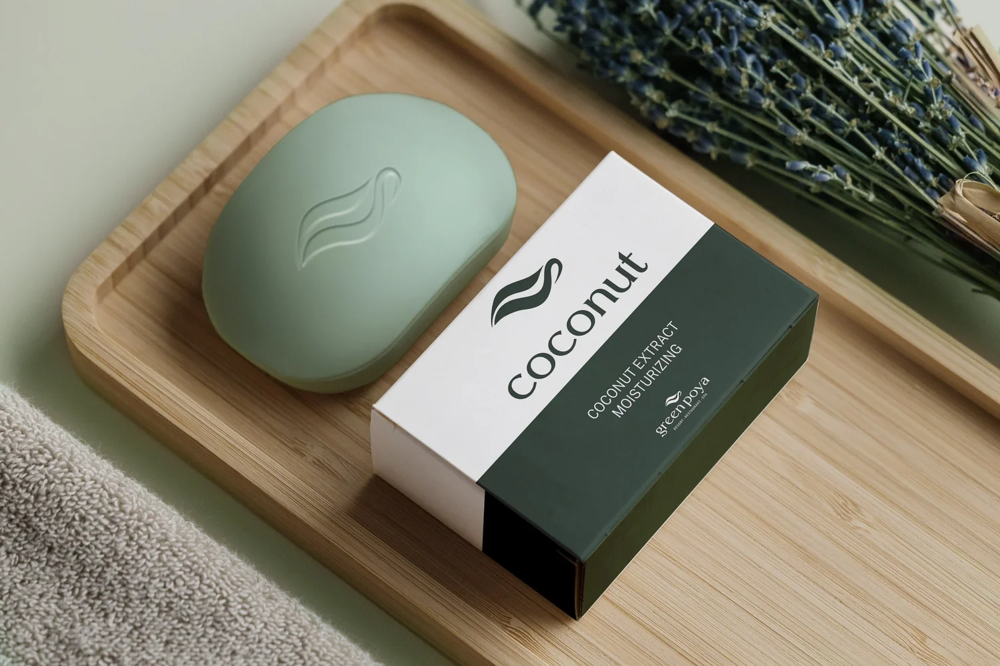
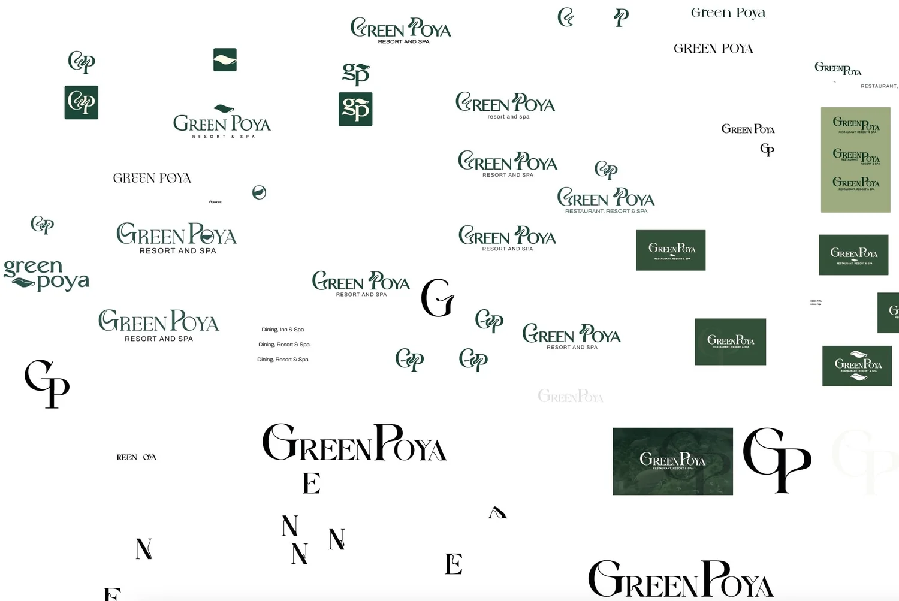
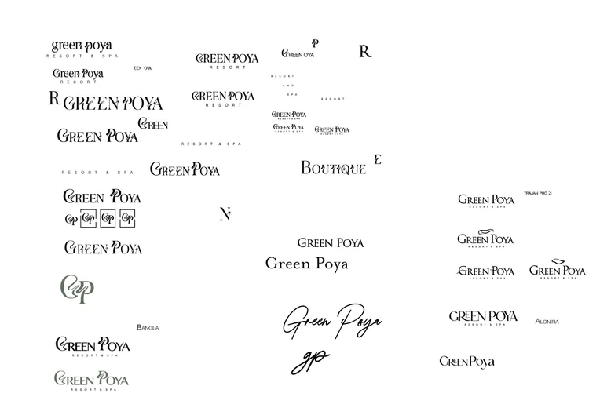
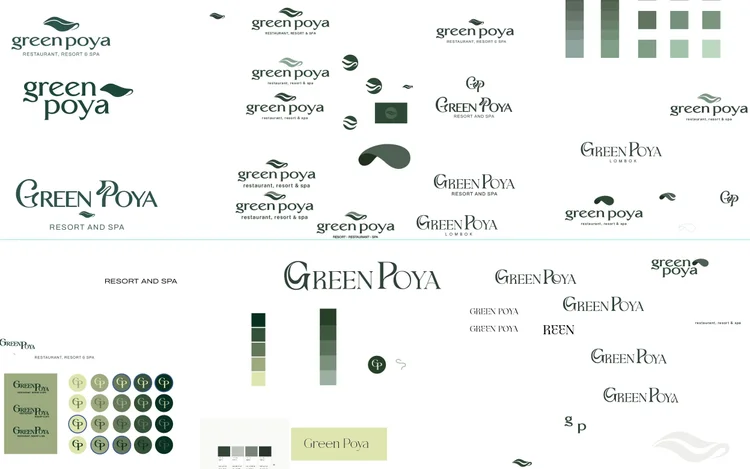